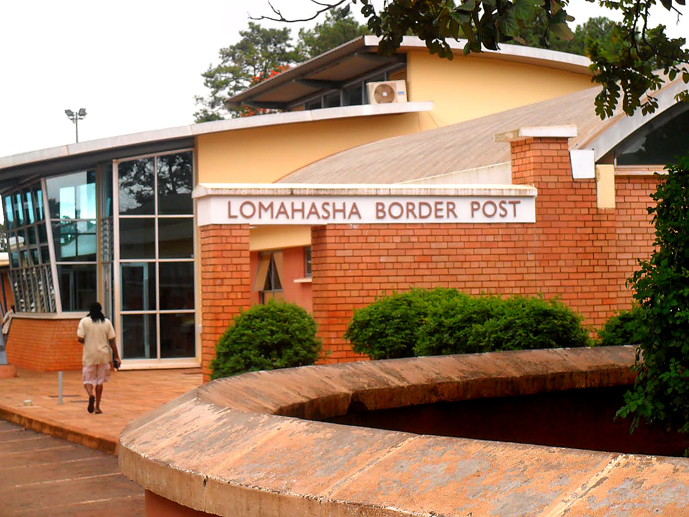
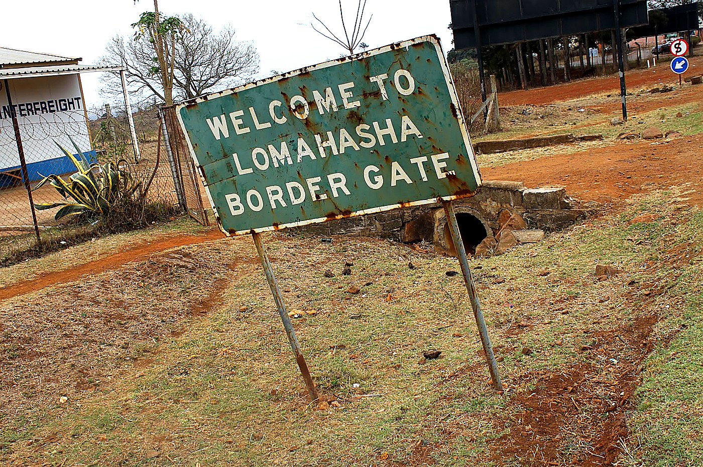
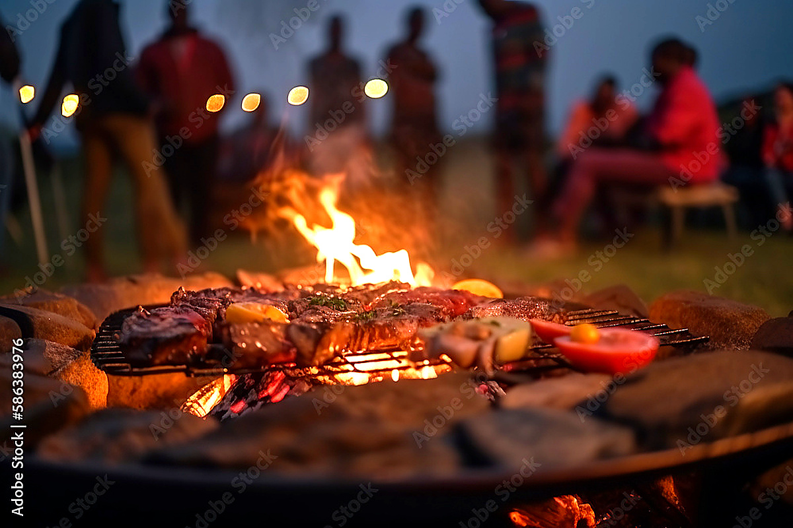
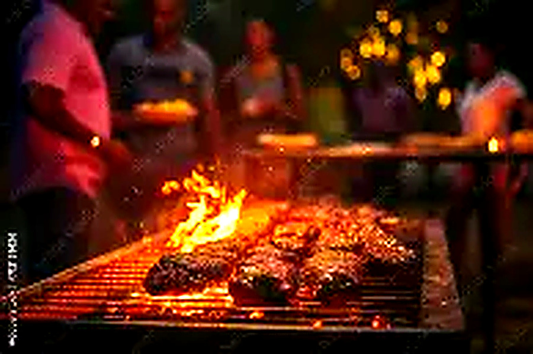
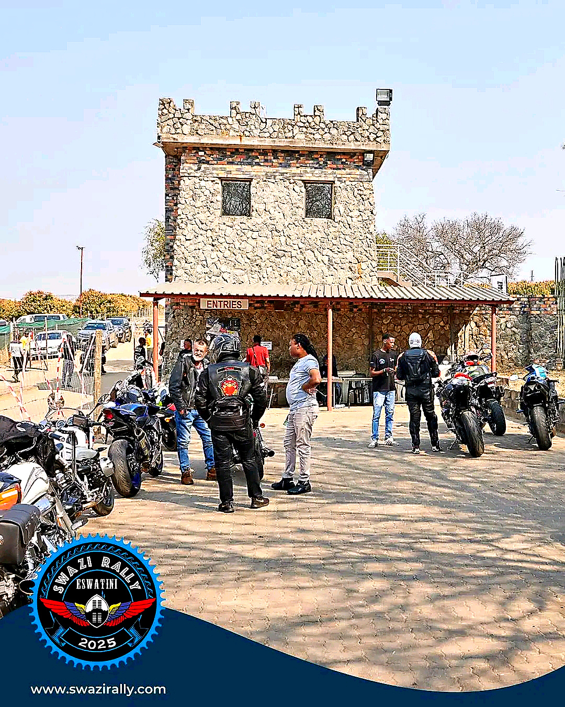

Beyond Borders
When the Sunday ride is not enough. Real photos and notes from our annual adventures beyond the borders of Eswatini.
2023 Edition
In September 2023, fourteen Riders Ranch members crossed into Mozambique through the Lomahasha border and rode south toward the coastal province of Maputo — flat roads, palm trees, the Indian Ocean, and Mozambican hospitality at every stop.
Total distance over two days: 210 km. Accommodation at a guest lodge in Namaacha. The evening braai was voted the highlight of the whole trip.
| Dates | 7–9 September 2023 |
| Riders | 14 members |
| Total Distance | 210 km |
| Countries | Eswatini → Mozambique |
| Overnight | Namaacha Guest Lodge |




On Any Terrain
Whether it's tar, gravel or mud — Riders Ranch members attack every surface with the same spirit. Tours are where that spirit burns brightest.
The Rally
The Swazi Rally is the biggest motorcycle rally in the Kingdom of Eswatini. Riders Ranch members have been participating for decades, riding as a group and representing the club at this iconic annual event.
From the entries tower to the start line arch — the Swazi Rally is the kind of event that reminds you why you ride. The energy, the bikes, the people.



Riders Ranch members who wish to enter the Swazi Rally should register their interest with the club secretary well in advance. Group transport and accommodation are coordinated by the club. Visit www.swazirally.com for official event information.
History
| Year | Destination | Duration | Distance | Riders |
|---|---|---|---|---|
| 2023 | Mozambique — Moz Coast | 3 days | 210 km | 14 |
| 2022 | South Africa — Garden Route | 5 days | 340 km | 11 |
| 2021 | Eswatini Highlands Loop | 2 days | 180 km | 18 |
| 2019 | SA — Drakensberg Foothills | 4 days | 280 km | 9 |
| 2018 | Mozambique — Maputo City | 3 days | 190 km | 12 |
| 2017 | SA — KwaZulu-Natal | 4 days | 260 km | 10 |
● 2020 tour cancelled due to COVID-19 border restrictions.
Next Up
Register your interest with the club secretary. Spots are limited and fill up fast — don't miss out.
Register Interest